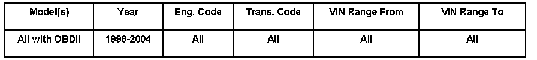

Computers/Controls - No Communication With Scan Tools
ConditionDiagnostic Testers, No Communication, Possible Damage Due to Improper Installation of Aftermarket Accessories No communication with diagnostic testers or scan tools on vehicle systems equipped with On Board Diagnosis (OBD).

01 06 13 Sept. 11, 2006 2002025 Supersedes T.B. Group 01 number 02-03 dated June 10, 2002 due to inclusion into ElsaWeb.
Technical Background
May be caused by improper installation of aftermarket accessories (including radios) in model years 1996 and newer vehicles.
Production Solution
No production change required.
Service
NOTE:
- Improper installation of aftermarket accessories (not factory approved) in model year 1996 and newer vehicles may affect various vehicle systems connected to the OBD system, cause severe damage to V.A.G. 1551/1552, and other scan tools without over-current protection.
- DO NOT attempt to connect any scan tool which is not equipped with over-current protection to any vehicle in which an aftermarket accessory has been installed before checking communications through the Data Link Connector (DLC) by using the VAS 5051 or VAS 5052 Diagnostic Tools (which are protected against excessive current).
Prior to connecting any scan tool (not equipped with over-current protection):
- Check for installation of any aftermarket accessory (which may be improperly connected to vehicle OBD wiring).
If aftermarket accessory is installed:
- Attempt OBD communication using a VAS 5051 or VAS 5052 Diagnostic Tester.
If OBD communication is possible:
- The installation of the aftermarket accessory will not interfere with OBD communication through the DLC.
If OBD communication is NOT possible:
- Scan tools without over-current protection, (except the VAS 5051 or VAS 5052 Diagnostic Testers) cannot safely be connected to the vehicle DLC until the cause for problem is determined and eliminated.
- Remove (disconnect) the aftermarket accessory and attempt communication again.
If OBD communication is possible:
- Continue diagnosis (using preferred diagnostic tester) with accessory disconnected.
- Accessory installation should be corrected to ensure no future communication problems will occur.
If OBD communication is NOT possible:
- Additional diagnosis is required to determine the cause of the communication failure.
If it is determined that an improperly installed aftermarket accessory is the cause for communication problems with the OBD system or damaged the OBD system:
- Removal and installation of the aftermarket accessory (for access or repairs to the OBD system) are not covered by the Vehicle Warranties.
Warranty
Information only.
Required Parts and Tools
No Special Parts required. Always see ETKA for the latest part(s) information.
No Special Tools required.